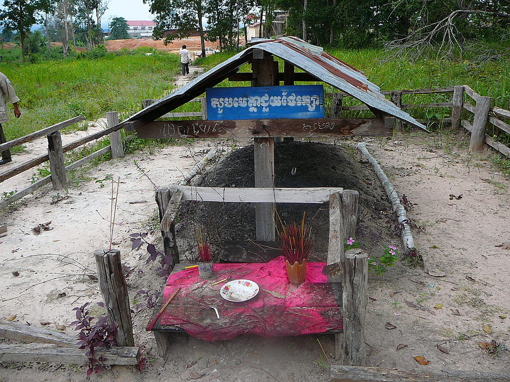

Pol Pot został obalony w 1979 r. przez partyjną opozycję, popartą przez Wietnam. Czerwoni Khmerzy wycofali się do dżungli w zachodniej części kraju. Pot podjął walkę z reżimem Hun Sena. W 1985 r. oficjalnie zrzekł się przywództwa nad Czerwonymi Khmerami, jednak nadal odgrywał znaczną rolę w życiu politycznym Kambodży. Zmarł w 1988 r., okoliczności jego śmierci nie są do końca jasne.

Grób Pol Pota w Anlong Veng, źródło zdjęcia: Wikimedia Commons.
W 1885 r. największa indyjska partia polityczna - Indyjski Kongres Narodowy - wykorzystała zaangażowanie Brytyjczyków w wojnę i wysunęła postulat przyznania Indiom niepodległości. Rząd brytyjski nie spełnił tych żądań, a nawet zaostrzył kurs wobec ruchu wyzwoleńczego. Doprowadziło to do licznych wystąpień zbrojnych przeciwko władzy kolonialnej, tłumionych przez wojska brytyjskie.
W tak napiętej sytuacji aktywność polityczną rozpoczął Mahatma Gandhi. Wykorzystał on swe wcześniejsze doświadczenia w zmaganiach z administracją kolonialną i przeciwstawił zbrojnej konfrontacji taktykę obywatelskiego nieposłuszeństwa. Metoda biernego oporu, którą poparła większość Hindusów, była dokuczliwa dla władz kolonialnych. Uwięzienie Gandhiego nie przyniosło zamierzonego skutku. Brytyjczycy musieli zasiąść do rozmów. W obradach tzw. indyjskiego Okrągłego Stołu wzięli udział przedstawiciele władz brytyjskich oraz delegaci dwóch największych społeczności religijnych Indii: hinduistów i muzułmanów. W 1935 r. parlament przyjął ustawę o przekształceniu Indii w federację prowincji oraz księstw. Wciąż jednak władza znajdowała się w rękach gubernatorów i wicekróla.
Dopiero po zakończeniu II wojny światowej utrzymanie panowania nad Indiami okazało się niemożliwe. Na pomocy trójstronnych porozumień między hinduistami, muzułmanami i Brytyjczykami utworzono dwa państwa Indie i Pakistan. 15 sierpnia 1947 roku proklamowano ich niepodległość.
Wojnę koreańską z lat 1950-1953 można podzielić na dwa zasadnicze etapy:
Przebieg wojny:
Etap wojny manewrowej:
Etap wojny pozycyjnej:
Zakończenie wojny:
Rola Mao Zedonga w historii Chin: